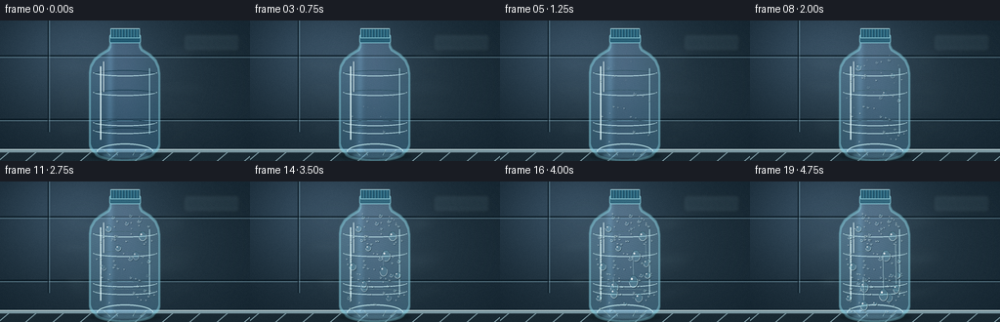
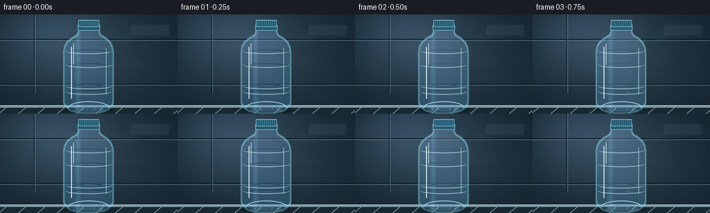

CODING AGENTS AS PIXEL WORLD MODELS
traex/GPT-5.6-Sol · phygen_115
点击播放 · 原生 RGB 像素
逐轮保存的候选
回放视频、检查图与代码变化。
每份候选均可单独播放。实际图片检查记录在下方工具轨迹中。
候选 01播放与检查图
点击播放 · 原生 RGB 像素

展开代码变化
--- 上一保存版本
+++ 本次保存版本
@@ -0,0 +1,225 @@
+from pathlib import Path
+import json, math
+import numpy as np
+from PIL import Image, ImageDraw, ImageFilter
+import artifact_io
+
+CASE_DIR = Path(__file__).resolve().parent
+spec = json.loads((CASE_DIR / 'task_spec.json').read_text())
+W, H, N = spec['width'], spec['height'], spec['frames']
+S = 4
+WW, HH = W*S, H*S
+rng = np.random.default_rng(115)
+
+def sc(v): return int(round(v*S))
+def pts(seq): return [(sc(x), sc(y)) for x,y in seq]
+def clamp(x, a=0.0, b=1.0): return max(a, min(b, x))
+
+def background():
+ y, x = np.mgrid[0:HH, 0:WW]
+ # Cold-room cyan-gray lighting, brighter around the bottle.
+ vign = np.sqrt(((x-WW*.52)/(WW*.75))**2 + ((y-HH*.48)/(HH*.85))**2)
+ lamp = np.exp(-(((x-WW*.30)/(WW*.33))**2 + ((y-HH*.20)/(HH*.42))**2))
+ base = np.zeros((HH,WW,3), np.float32)
+ base[...,0] = 39 + 26*lamp - 20*vign
+ base[...,1] = 58 + 32*lamp - 23*vign
+ base[...,2] = 70 + 39*lamp - 24*vign
+ # Brushed, insulated wall texture.
+ noise = rng.normal(0, 2.2, (HH,WW))
+ noise = np.asarray(Image.fromarray(np.uint8(np.clip(noise+128,0,255))).filter(ImageFilter.GaussianBlur(sc(.45))), np.float32)-128
+ base += noise[...,None]
+ im = Image.fromarray(np.uint8(np.clip(base,0,255)), 'RGB').convert('RGBA')
+ d = ImageDraw.Draw(im, 'RGBA')
+ # Insulated panel seams and out-of-focus fixtures.
+ for yy in (36, 101):
+ d.line((0,sc(yy),WW,sc(yy)), fill=(14,30,40,105), width=sc(1.2))
+ d.line((0,sc(yy+1.5),WW,sc(yy+1.5)), fill=(120,159,174,25), width=sc(.6))
+ d.line((sc(49),0,sc(49),sc(114)), fill=(15,31,41,75), width=sc(1))
+ d.line((sc(50.5),0,sc(50.5),sc(114)), fill=(118,156,172,22), width=sc(.6))
+ # A blurred refrigeration duct/control shape to provide room context.
+ fixture = Image.new('RGBA',(WW,HH),(0,0,0,0)); f = ImageDraw.Draw(fixture,'RGBA')
+ f.rounded_rectangle((sc(188),sc(14),sc(245),sc(31)), radius=sc(3), fill=(104,133,143,38), outline=(166,195,201,34), width=sc(1))
+ for xx in range(193,243,6): f.line((sc(xx),sc(19),sc(xx+3),sc(27)), fill=(8,26,34,40), width=sc(1))
+ fixture = fixture.filter(ImageFilter.GaussianBlur(sc(1.8)))
+ im = Image.alpha_composite(im, fixture)
+ # Steel shelf and its cool reflection.
+ d = ImageDraw.Draw(im,'RGBA')
+ d.rectangle((0,sc(132),WW,HH), fill=(25,41,50,255))
+ d.rectangle((0,sc(132),WW,sc(135)), fill=(122,151,160,115))
+ d.line((0,sc(132),WW,sc(132)), fill=(209,228,230,95), width=sc(.7))
+ for xx in range(-30, W+30, 28):
+ d.line((sc(xx),HH,sc(xx+13),sc(133)), fill=(119,148,157,15), width=sc(1))
+ return im
+
+BG = background()
+
+# Bottle silhouette and interior masks.
+bottle_outline = [
+ (113,17),(143,17),(143,26),(145,30),(153,35),(159,41),(162,48),
+ (163,55),(163,123),(161,131),(157,136),(151,139),(105,139),(99,137),
+ (95,132),(92,125),(92,54),(93,47),(97,40),(103,35),(111,30),(113,26)
+]
+mask = Image.new('L',(WW,HH),0)
+md = ImageDraw.Draw(mask)
+md.polygon(pts(bottle_outline), fill=255)
+# Rounded body and shoulder transitions.
+md.rounded_rectangle((sc(92),sc(48),sc(163),sc(136)), radius=sc(10), fill=255)
+md.ellipse((sc(98),sc(128),sc(157),sc(143)), fill=255)
+mask = mask.filter(ImageFilter.GaussianBlur(sc(.35)))
+mask_arr = np.asarray(mask,np.float32)/255.0
+
+# Pre-generate condensation bead locations for deterministic, coherent growth.
+def halfwidth(y):
+ if y < 32: return 13 + max(0,y-18)*.25
+ if y < 49: return 17 + (y-32)*.95
+ if y < 126: return 34
+ return 34-(y-126)*.45
+
+beads=[]
+for k in range(118):
+ yy = rng.uniform(32,133)
+ hw = halfwidth(yy)
+ xx = 128 + rng.uniform(-hw+4, hw-4)
+ rad = rng.choice([rng.uniform(.45,1.15),rng.uniform(1.1,2.4)], p=[.72,.28])
+ onset = rng.uniform(.035,.82)
+ growth = rng.uniform(.12,.28)
+ aspect = rng.uniform(.76,1.12)
+ beads.append((xx,yy,rad,aspect,onset,growth))
+# Hero beads become readily legible at this resolution.
+hero = [
+ (111,48,3.1,1.15,.17,.30),(146,56,3.9,1.20,.28,.28),(121,68,2.8,1.05,.34,.24),
+ (139,76,4.5,1.30,.40,.27),(105,87,3.4,1.18,.46,.25),(151,96,3.0,1.12,.51,.22),
+ (117,108,4.1,1.35,.52,.27),(142,119,3.7,1.25,.60,.22),(101,119,2.7,1.12,.63,.20)
+]
+
+def draw_bottle(frame, p):
+ # Translucent plastic: background remains visible, with water tint and edge refraction.
+ arr_bg = np.asarray(frame.convert('RGB'),np.float32)
+ y,x = np.mgrid[0:HH,0:WW]
+ xn=(x/S-128)/36
+ vertical=(y/S)
+ side = np.clip(np.abs(xn),0,1)
+ glint = np.exp(-((xn+.43)/.10)**2)
+ core = np.exp(-((xn-.05)/.68)**2)
+ surf=np.empty_like(arr_bg)
+ surf[...,0]=arr_bg[...,0]*.63 + 44 + 18*glint - 8*side
+ surf[...,1]=arr_bg[...,1]*.68 + 52 + 25*glint + 3*core
+ surf[...,2]=arr_bg[...,2]*.72 + 60 + 29*glint + 7*core
+ # Bottle is full of very cold water, slightly darker toward the bottom.
+ liquid=np.clip((vertical-34)/100,0,1)
+ surf[...,0]-=liquid*9; surf[...,1]+=liquid*1; surf[...,2]+=liquid*5
+ a=(mask_arr*.84)[...,None]
+ comp=arr_bg*(1-a)+surf*a
+ im=Image.fromarray(np.uint8(np.clip(comp,0,255)),'RGB').convert('RGBA')
+
+ # Plastic edge refraction.
+ dil=np.asarray(mask.filter(ImageFilter.MaxFilter(sc(2)//2*2+1)),np.int16)
+ ero=np.asarray(mask.filter(ImageFilter.MinFilter(sc(2)//2*2+1)),np.int16)
+ edge=Image.fromarray(np.uint8(np.clip(dil-ero,0,255)))
+ edge_layer=Image.new('RGBA',(WW,HH),(137,215,231,0)); edge_layer.putalpha(edge.point(lambda v:int(v*.50)))
+ im=Image.alpha_composite(im,edge_layer)
+ d=ImageDraw.Draw(im,'RGBA')
+ # Moulded ribs and base indentations.
+ for yy,alpha in [(52,52),(72,42),(103,46),(111,38)]:
+ d.arc((sc(95),sc(yy-3),sc(161),sc(yy+5)), 5,175, fill=(198,235,241,alpha), width=sc(.65))
+ d.arc((sc(96),sc(yy-1),sc(160),sc(yy+7)), 186,354, fill=(10,47,61,alpha), width=sc(.55))
+ d.arc((sc(99),sc(126),sc(157),sc(143)),180,357,fill=(190,230,236,55),width=sc(1))
+ for xx in (106,117,139,150):
+ d.line((sc(xx),sc(132),sc(xx+(128-xx)*.3),sc(138)),fill=(179,219,226,35),width=sc(.6))
+ # Tall dry-plastic specular highlights, gradually broken by surface fog.
+ d.line((sc(103),sc(47),sc(103),sc(122)),fill=(225,248,250,int(80-31*p)),width=sc(1.2))
+ d.line((sc(106),sc(42),sc(106),sc(73)),fill=(240,255,255,int(110-35*p)),width=sc(.7))
+ d.line((sc(153),sc(49),sc(153),sc(116)),fill=(167,219,231,int(44-16*p)),width=sc(.7))
+ # Neck and screw cap.
+ d.rounded_rectangle((sc(112),sc(14),sc(144),sc(23)),radius=sc(2),fill=(34,89,113,255),outline=(127,193,208,150),width=sc(.7))
+ d.rectangle((sc(113),sc(8),sc(143),sc(18)),fill=(42,102,127,255),outline=(134,195,208,150),width=sc(.7))
+ for xx in np.arange(115,143,3):
+ d.line((sc(xx),sc(9),sc(xx),sc(17)),fill=(18,63,85,150),width=sc(.7))
+ d.line((sc(xx+.7),sc(9),sc(xx+.7),sc(17)),fill=(147,202,211,60),width=sc(.35))
+ d.line((sc(114),sc(8),sc(142),sc(8)),fill=(205,231,234,100),width=sc(.6))
+ return im
+
+def add_mist(frame,p,t):
+ # Moist refrigerated air drifting against the colder bottle.
+ haze=Image.new('RGBA',(WW,HH),(0,0,0,0)); hd=ImageDraw.Draw(haze,'RGBA')
+ for j in range(18):
+ side=-1 if j%2==0 else 1
+ yy=25+(j*23)%102 + 3*math.sin(t*.7+j)
+ start=71 if side<0 else 185
+ travel=(17+12*math.sin(j*2.1))*p
+ xx=start-side*travel+4*math.sin(t*.45+j*.8)
+ rw=14+(j%4)*5; rh=2.0+(j%3)*.8
+ hd.ellipse((sc(xx-rw),sc(yy-rh),sc(xx+rw),sc(yy+rh)),fill=(186,224,232,int(8+9*p)))
+ haze=haze.filter(ImageFilter.GaussianBlur(sc(5.0)))
+ return Image.alpha_composite(frame,haze)
+
+def add_surface_fog(frame,p):
+ # Fine micro-condensation creates a milkier film before distinct drops form.
+ q=clamp((p-.08)/.65)
+ if q<=0:return frame
+ yy,xx=np.mgrid[0:HH,0:WW]
+ grain=(np.sin(xx*.91+yy*.37)+np.sin(xx*.27-yy*.73)+2)/4
+ alpha=np.uint8(np.clip(mask_arr*(8+25*q)*(0.55+.45*grain),0,255))
+ fog=Image.new('RGBA',(WW,HH),(202,235,239,0)); fog.putalpha(Image.fromarray(alpha))
+ return Image.alpha_composite(frame,fog)
+
+def bead(draw,x,y,r,asp,amount,alpha_scale=1.0):
+ if amount<=.03:return
+ rr=max(.32,r*(.25+.75*amount)); ry=rr*asp
+ box=(sc(x-rr),sc(y-ry),sc(x+rr),sc(y+ry))
+ # Offset contact shadow and cool refractive body.
+ draw.ellipse((sc(x-rr+.65),sc(y-ry+.8),sc(x+rr+.65),sc(y+ry+.8)),fill=(5,34,46,int(80*amount*alpha_scale)))
+ draw.ellipse(box,fill=(126,203,218,int(40*amount*alpha_scale)),outline=(220,249,250,int(150*amount*alpha_scale)),width=max(1,sc(.45)))
+ # Dark lower rim, bright pinpoint toward light source.
+ draw.arc(box,15,154,fill=(241,255,255,int(180*amount*alpha_scale)),width=max(1,sc(.42)))
+ draw.arc(box,175,335,fill=(12,57,72,int(95*amount*alpha_scale)),width=max(1,sc(.45)))
+ hr=max(.25,rr*.20)
+ draw.ellipse((sc(x-rr*.38-hr),sc(y-ry*.40-hr),sc(x-rr*.38+hr),sc(y-ry*.40+hr)),fill=(255,255,255,int(210*amount*alpha_scale)))
+
+def add_condensation(frame,p):
+ drops=Image.new('RGBA',(WW,HH),(0,0,0,0)); dd=ImageDraw.Draw(drops,'RGBA')
+ for x,y,r,asp,onset,growth in beads:
+ amt=clamp((p-onset)/growth)
+ bead(dd,x,y,r,asp,amt,.80)
+ for x,y,r,asp,onset,growth in hero:
+ amt=clamp((p-onset)/growth)
+ bead(dd,x,y,r,asp,amt,1.0)
+ # Coalesced gravity-driven drops and wet tracks late in the timelapse.
+ runs=[(136,76,.58,40,4.5),(116,98,.66,29,3.7),(149,64,.74,46,3.2)]
+ for x,y,onset,length,r in runs:
+ q=clamp((p-onset)/(.98-onset))
+ if q>0:
+ head_y=y+length*q
+ # Clear wet path with bright and dark sides.
+ dd.line((sc(x),sc(y),sc(x+.7),sc(head_y)),fill=(211,246,248,int(80*q)),width=sc(1.15))
+ dd.line((sc(x+1.1),sc(y+2),sc(x+1.3),sc(head_y-1)),fill=(7,51,66,int(65*q)),width=sc(.55))
+ bead(dd,x+.6,head_y,r,1.38,min(1,.4+q),1.15)
+ clipped=Image.composite(drops,Image.new('RGBA',(WW,HH),(0,0,0,0)),mask)
+ return Image.alpha_composite(frame,clipped)
+
+def render(i):
+ p=i/(N-1)
+ t=i/spec['fps']
+ frame=BG.copy()
+ frame=add_mist(frame,p,t)
+ frame=draw_bottle(frame,p)
+ frame=add_surface_fog(frame,p)
+ frame=add_condensation(frame,p)
+ # Ground contact shadow/reflection stays subtle and stable.
+ overlay=Image.new('RGBA',(WW,HH),(0,0,0,0)); od=ImageDraw.Draw(overlay,'RGBA')
+ od.ellipse((sc(91),sc(135),sc(165),sc(143)),fill=(2,15,22,95))
+ od.ellipse((sc(105),sc(136),sc(152),sc(140)),fill=(150,211,220,int(12+15*p)))
+ overlay=overlay.filter(ImageFilter.GaussianBlur(sc(1.2)))
+ frame=Image.alpha_composite(frame,overlay)
+ # Downsample antialiased, then slight cinematic grain to avoid sterile vector look.
+ rgb=frame.convert('RGB').resize((W,H),Image.Resampling.LANCZOS)
+ arr=np.asarray(rgb,np.int16)
+ local_rng=np.random.default_rng(9000+i)
+ grain=local_rng.normal(0,0.65,(H,W,1))
+ arr=np.clip(arr+grain,0,255).astype(np.uint8)
+ return arr
+
+frames=np.stack([render(i) for i in range(N)],axis=0)
+artifact_io.save(frames, CASE_DIR)
+print(f'saved {frames.shape} {frames.dtype}; dry-to-wet mean frame deltas:',
+ [round(float(np.abs(frames[j].astype(float)-frames[0]).mean()),2) for j in (5,10,15,19)])
可观测工具轨迹
实际执行的命令与返回图片。
命令 1exit 0
/bin/bash -lc "cat prompt.txt && printf '\\n--- GENERATION_RULES ---\\n' && cat GENERATION_RULES.md && printf '\\n--- TASK_SPEC ---\\n' && cat task_spec.json"
命令 2exit 0
/bin/bash -lc "find . -maxdepth 3 -type f -printf '%p\\n' | sort && printf '\\n--- binaries ---\\n' && command -v ffmpeg || true; command -v blender || true; command -v python3 || true"
命令 3exit 0
/bin/bash -lc 'cat artifact_io.py'
命令 4exit 0
/bin/bash -lc "cat > generate.py <<'PY'
from pathlib import Path
import json, math
import numpy as np
from PIL import Image, ImageDraw, ImageFilter
import artifact_io
CASE_DIR = Path(__file__).resolve().parent
spec = json.loads((CASE_DIR / 'task_spec.json').read_text())
W, H, N = spec['width'], spec['height'], spec['frames']
S = 4
WW, HH = W*S, H*S
rng = np.random.default_rng(115)
def sc(v): return int(round(v*S))
def pts(seq): return [(sc(x), sc(y)) for x,y in seq]
def clamp(x, a=0.0, b=1.0): return max(a, min(b, x))
def background():
y, x = np.mgrid[0:HH, 0:WW]
# Cold-room cyan-gray lighting, brighter around the bottle.
vign = np.sqrt(((x-WW*.52)/(WW*.75))**2 + ((y-HH*.48)/(HH*.85))**2)
lamp = np.exp(-(((x-WW*.30)/(WW*.33))**2 + ((y-HH*.20)/(HH*.42))**2))
base = np.zeros((HH,WW,3), np.float32)
base[...,0] = 39 + 26*lamp - 20*vign
base[...,1] = 58 + 32*lamp - 23*vign
base[...,2] = 70 + 39*lamp - 24*vign
# Brushed, insulated wall texture.
noise = rng.normal(0, 2.2, (HH,WW))
noise = np.asarray(Image.fromarray(np.uint8(np.clip(noise+128,0,255))).filter(ImageFilter.GaussianBlur(sc(.45))), np.float32)-128
base += noise[...,None]
im = Image.fromarray(np.uint8(np.clip(base,0,255)), 'RGB').convert('RGBA')
d = ImageDraw.Draw(im, 'RGBA')
# Insulated panel seams and out-of-focus fixtures.
for yy in (36, 101):
d.line((0,sc(yy),WW,sc(yy)), fill=(14,30,40,105), width=sc(1.2))
d.line((0,sc(yy+1.5),WW,sc(yy+1.5)), fill=(120,159,174,25), width=sc(.6))
d.line((sc(49),0,sc(49),sc(114)), fill=(15,31,41,75), width=sc(1))
d.line((sc(50.5),0,sc(50.5),sc(114)), fill=(118,156,172,22), width=sc(.6))
# A blurred refrigeration duct/control shape to provide room context.
fixture = Image.new('RGBA',(WW,HH),(0,0,0,0)); f = ImageDraw.Draw(fixture,'RGBA')
f.rounded_rectangle((sc(188),sc(14),sc(245),sc(31)), radius=sc(3), fill=(104,133,143,38), outline=(166,195,201,34), width=sc(1))
for xx in range(193,243,6): f.line((sc(xx),sc(19),sc(xx+3),sc(27)), fill=(8,26,34,40), width=sc(1))
fixture = fixture.filter(ImageFilter.GaussianBlur(sc(1.8)))
im = Image.alpha_composite(im, fixture)
# Steel shelf and its cool reflection.
d = ImageDraw.Draw(im,'RGBA')
d.rectangle((0,sc(132),WW,HH), fill=(25,41,50,255))
d.rectangle((0,sc(132),WW,sc(135)), fill=(122,151,160,115))
d.line((0,sc(132),WW,sc(132)), fill=(209,228,230,95), width=sc(.7))
for xx in range(-30, W+30, 28):
d.line((sc(xx),HH,sc(xx+13),sc(133)), fill=(119,148,157,15), width=sc(1))
return im
BG = background()
# Bottle silhouette and interior masks.
bottle_outline = [
(113,17),(143,17),(143,26),(145,30),(153,35),(159,41),(162,48),
(163,55),(163,123),(161,131),(157,136),(151,139),(105,139),(99,137),
(95,132),(92,125),(92,54),(93,47),(97,40),(103,35),(111,30),(113,26)
]
mask = Image.new('L',(WW,HH),0)
md = ImageDraw.Draw(mask)
md.polygon(pts(bottle_outline), fill=255)
# Rounded body and shoulder transitions.
md.rounded_rectangle((sc(92),sc(48),sc(163),sc(136)), radius=sc(10), fill=255)
md.ellipse((sc(98),sc(128),sc(157),sc(143)), fill=255)
mask = mask.filter(ImageFilter.GaussianBlur(sc(.35)))
mask_arr = np.asarray(mask,np.float32)/255.0
# Pre-generate condensation bead locations for deterministic, coherent growth.
def halfwidth(y):
if y < 32: return 13 + max(0,y-18)*.25
if y < 49: return 17 + (y-32)*.95
if y < 126: return 34
return 34-(y-126)*.45
beads=[]
for k in range(118):
yy = rng.uniform(32,133)
hw = halfwidth(yy)
xx = 128 + rng.uniform(-hw+4, hw-4)
rad = rng.choice([rng.uniform(.45,1.15),rng.uniform(1.1,2.4)], p=[.72,.28])
onset = rng.uniform(.035,.82)
growth = rng.uniform(.12,.28)
aspect = rng.uniform(.76,1.12)
beads.append((xx,yy,rad,aspect,onset,growth))
# Hero beads become readily legible at this resolution.
hero = [
(111,48,3.1,1.15,.17,.30),(146,56,3.9,1.20,.28,.28),(121,68,2.8,1.05,.34,.24),
(139,76,4.5,1.30,.40,.27),(105,87,3.4,1.18,.46,.25),(151,96,3.0,1.12,.51,.22),
(117,108,4.1,1.35,.52,.27),(142,119,3.7,1.25,.60,.22),(101,119,2.7,1.12,.63,.20)
]
def draw_bottle(frame, p):
# Translucent plastic: background remains visible, with water tint and edge refraction.
arr_bg = np.asarray(frame.convert('RGB'),np.float32)
y,x = np.mgrid[0:HH,0:WW]
xn=(x/S-128)/36
vertical=(y/S)
side = np.clip(np.abs(xn),0,1)
glint = np.exp(-((xn+.43)/.10)**2)
core = np.exp(-((xn-.05)/.68)**2)
surf=np.empty_like(arr_bg)
surf[...,0]=arr_bg[...,0]*.63 + 44 + 18*glint - 8*side
surf[...,1]=arr_bg[...,1]*.68 + 52 + 25*glint + 3*core
surf[...,2]=arr_bg[...,2]*.72 + 60 + 29*glint + 7*core
# Bottle is full of very cold water, slightly darker toward the bottom.
liquid=np.clip((vertical-34)/100,0,1)
surf[...,0]-=liquid*9; surf[...,1]+=liquid*1; surf[...,2]+=liquid*5
a=(mask_arr*.84)[...,None]
comp=arr_bg*(1-a)+surf*a
im=Image.fromarray(np.uint8(np.clip(comp,0,255)),'RGB').convert('RGBA')
# Plastic edge refraction.
dil=np.asarray(mask.filter(ImageFilter.MaxFilter(sc(2)//2*2+1)),np.int16)
ero=np.asarray(mask.filter(ImageFilter.MinFilter(sc(2)//2*2+1)),np.int16)
edge=Image.fromarray(np.uint8(np.clip(dil-ero,0,255)))
edge_layer=Image.new('RGBA',(WW,HH),(137,215,231,0)); edge_layer.putalpha(edge.point(lambda v:int(v*.50)))
im=Image.alpha_composite(im,edge_layer)
d=ImageDraw.Draw(im,'RGBA')
# Moulded ribs and base indentations.
for yy,alpha in [(52,52),(72,42),(103,46),(111,38)]:
d.arc((sc(95),sc(yy-3),sc(161),sc(yy+5)), 5,175, fill=(198,235,241,alpha), width=sc(.65))
d.arc((sc(96),sc(yy-1),sc(160),sc(yy+7)), 186,354, fill=(10,47,61,alpha), width=sc(.55))
d.arc((sc(99),sc(126),sc(157),sc(143)),180,357,fill=(190,230,236,55),width=sc(1))
for xx in (106,117,139,150):
d.line((sc(xx),sc(132),sc(xx+(128-xx)*.3),sc(138)),fill=(179,219,226,35),width=sc(.6))
# Tall dry-plastic specular highlights, gradually broken by surface fog.
d.line((sc(103),sc(47),sc(103),sc(122)),fill=(225,248,250,int(80-31*p)),width=sc(1.2))
d.line((sc(106),sc(42),sc(106),sc(73)),fill=(240,255,255,int(110-35*p)),width=sc(.7))
d.line((sc(153),sc(49),sc(153),sc(116)),fill=(167,219,231,int(44-16*p)),width=sc(.7))
# Neck and screw cap.
d.rounded_rectangle((sc(112),sc(14),sc(144),sc(23)),radius=sc(2),fill=(34,89,113,255),outline=(127,193,208,150),width=sc(.7))
d.rectangle((sc(113),sc(8),sc(143),sc(18)),fill=(42,102,127,255),outline=(134,195,208,150),width=sc(.7))
for xx in np.arange(115,143,3):
d.line((sc(xx),sc(9),sc(xx),sc(17)),fill=(18,63,85,150),width=sc(.7))
d.line((sc(xx+.7),sc(9),sc(xx+.7),sc(17)),fill=(147,202,211,60),width=sc(.35))
d.line((sc(114),sc(8),sc(142),sc(8)),fill=(205,231,234,100),width=sc(.6))
return im
def add_mist(frame,p,t):
# Moist refrigerated air drifting against the colder bottle.
haze=Image.new('RGBA',(WW,HH),(0,0,0,0)); hd=ImageDraw.Draw(haze,'RGBA')
for j in range(18):
side=-1 if j%2==0 else 1
yy=25+(j*23)%102 + 3*math.sin(t*.7+j)
start=71 if side<0 else 185
travel=(17+12*math.sin(j*2.1))*p
xx=start-side*travel+4*math.sin(t*.45+j*.8)
rw=14+(j%4)*5; rh=2.0+(j%3)*.8
hd.ellipse((sc(xx-rw),sc(yy-rh),sc(xx+rw),sc(yy+rh)),fill=(186,224,232,int(8+9*p)))
haze=haze.filter(ImageFilter.GaussianBlur(sc(5.0)))
return Image.alpha_composite(frame,haze)
def add_surface_fog(frame,p):
# Fine micro-condensation creates a milkier film before distinct drops form.
q=clamp((p-.08)/.65)
if q<=0:return frame
yy,xx=np.mgrid[0:HH,0:WW]
grain=(np.sin(xx*.91+yy*.37)+np.sin(xx*.27-yy*.73)+2)/4
alpha=np.uint8(np.clip(mask_arr*(8+25*q)*(0.55+.45*grain),0,255))
fog=Image.new('RGBA',(WW,HH),(202,235,239,0)); fog.putalpha(Image.fromarray(alpha))
return Image.alpha_composite(frame,fog)
def bead(draw,x,y,r,asp,amount,alpha_scale=1.0):
if amount<=.03:return
rr=max(.32,r*(.25+.75*amount)); ry=rr*asp
box=(sc(x-rr),sc(y-ry),sc(x+rr),sc(y+ry))
# Offset contact shadow and cool refractive body.
draw.ellipse((sc(x-rr+.65),sc(y-ry+.8),sc(x+rr+.65),sc(y+ry+.8)),fill=(5,34,46,int(80*amount*alpha_scale)))
draw.ellipse(box,fill=(126,203,218,int(40*amount*alpha_scale)),outline=(220,249,250,int(150*amount*alpha_scale)),width=max(1,sc(.45)))
# Dark lower rim, bright pinpoint toward light source.
draw.arc(box,15,154,fill=(241,255,255,int(180*amount*alpha_scale)),width=max(1,sc(.42)))
draw.arc(box,175,335,fill=(12,57,72,int(95*amount*alpha_scale)),width=max(1,sc(.45)))
hr=max(.25,rr*.20)
draw.ellipse((sc(x-rr*.38-hr),sc(y-ry*.40-hr),sc(x-rr*.38+hr),sc(y-ry*.40+hr)),fill=(255,255,255,int(210*amount*alpha_scale)))
def add_condensation(frame,p):
drops=Image.new('RGBA',(WW,HH),(0,0,0,0)); dd=ImageDraw.Draw(drops,'RGBA')
for x,y,r,asp,onset,growth in beads:
amt=clamp((p-onset)/growth)
bead(dd,x,y,r,asp,amt,.80)
for x,y,r,asp,onset,growth in hero:
amt=clamp((p-onset)/growth)
bead(dd,x,y,r,asp,amt,1.0)
# Coalesced gravity-driven drops and wet tracks late in the timelapse.
runs=[(136,76,.58,40,4.5),(116,98,.66,29,3.7),(149,64,.74,46,3.2)]
for x,y,onset,length,r in runs:
q=clamp((p-onset)/(.98-onset))
if q>0:
head_y=y+length*q
# Clear wet path with bright and dark sides.
dd.line((sc(x),sc(y),sc(x+.7),sc(head_y)),fill=(211,246,248,int(80*q)),width=sc(1.15))
dd.line((sc(x+1.1),sc(y+2),sc(x+1.3),sc(head_y-1)),fill=(7,51,66,int(65*q)),width=sc(.55))
bead(dd,x+.6,head_y,r,1.38,min(1,.4+q),1.15)
clipped=Image.composite(drops,Image.new('RGBA',(WW,HH),(0,0,0,0)),mask)
return Image.alpha_composite(frame,clipped)
def render(i):
p=i/(N-1)
t=i/spec['fps']
frame=BG.copy()
frame=add_mist(frame,p,t)
frame=draw_bottle(frame,p)
frame=add_surface_fog(frame,p)
frame=add_condensation(frame,p)
# Ground contact shadow/reflection stays subtle and stable.
overlay=Image.new('RGBA',(WW,HH),(0,0,0,0)); od=ImageDraw.Draw(overlay,'RGBA')
od.ellipse((sc(91),sc(135),sc(165),sc(143)),fill=(2,15,22,95))
od.ellipse((sc(105),sc(136),sc(152),sc(140)),fill=(150,211,220,int(12+15*p)))
overlay=overlay.filter(ImageFilter.GaussianBlur(sc(1.2)))
frame=Image.alpha_composite(frame,overlay)
# Downsample antialiased, then slight cinematic grain to avoid sterile vector look.
rgb=frame.convert('RGB').resize((W,H),Image.Resampling.LANCZOS)
arr=np.asarray(rgb,np.int16)
local_rng=np.random.default_rng(9000+i)
grain=local_rng.normal(0,0.65,(H,W,1))
arr=np.clip(arr+grain,0,255).astype(np.uint8)
return arr
frames=np.stack([render(i) for i in range(N)],axis=0)
artifact_io.save(frames, CASE_DIR)
print(f'saved {frames.shape} {frames.dtype}; dry-to-wet mean frame deltas:',
[round(float(np.abs(frames[j].astype(float)-frames[0]).mean()),2) for j in (5,10,15,19)])
PY
python3 generate.py
ls -lh pixels.npz inspection.png transition_check.png index.html frames/00.png frames/19.png"命令 5exit 0
/bin/bash -lc "python3 - <<'PY'
import numpy as np, json
from pathlib import Path
p=Path('.')
a=np.load(p/'pixels.npz')['pixels']
s=json.loads((p/'task_spec.json').read_text())
assert a.shape==(s['height'],s['width'],s['frames'])
assert (p/'index.html').stat().st_size>0
assert len(list((p/'frames').glob('*.png')))==s['frames']
print('validated:', a.shape, a.dtype, 'frames:', len(list((p/'frames').glob('*.png'))))
PY"视觉工具实际返回图片 1

视觉工具实际返回图片 2

保存候选 1 份；完成命令 5 次；可验证图片返回 2 张。原始 API 响应与完整日志保留在本地。